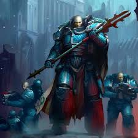

Alpharius Omegon
O Primarca da XX Legião, a Alpha Legion, é o mistério supremo de Warhammer 40k. Diferente de todos os seus irmãos, esta não é a história de um homem, mas de dois: Alpharius e seu gêmeo idêntico, Omegon. Eles são os mestres da espionagem, da manipulação e da guerra psicológica.
Quem é(são) ele(s)?
Alpharius teria sido, supostamente, o último Primarca a ser encontrado, em um mundo de piratas espaciais, ou talvez tenha sido secretamente o primeiro, criado sob a custódia direta de Malcador, o Sigilita, em Terra. Omegon foi a existência oculta. O segredo de que o Primarca da XX Legião era, na verdade, uma dupla, era desconhecido por quase todos os seus irmãos e pelo próprio Império. Eles operam sob o mantra "Hydra Dominatus": corte uma cabeça e duas surgirão no lugar. Para garantir o anonimato, os legionários da Alpha Legion frequentemente usam cirurgia estética para se parecerem com o Primarca, e todos respondem pela mesma frase: "Eu sou Alpharius".
Características e Personalidade
O Mestre das Marionetes: Eles preferem vencer uma guerra sem disparar um único tiro de bolter, infiltrando-se em governos, sabotando suprimentos e causando guerras civis antes mesmo de chegarem ao planeta.
Pragmatismo Extremo: Eles não possuem o ego de Fulgrim ou a fúria de Angron. São frios, calculistas e acreditam que o fim justifica qualquer meio, não importa quão sujo seja.
A Dualidade Moral: Enquanto outros Primarcas são claramente leais ou traidores, a Alpha Legion habita uma zona cinzenta. Há indícios de que eles se tornaram "traidores" para, paradoxalmente, tentar salvar o Império a longo prazo.
Estatura: Eles eram os menores entre os Primarcas, o que lhes permitia se disfarçar facilmente como Space Marines comuns dentro de sua própria legião.
Grandes Feitos
A Prova de Eficiência: Antes de se revelarem totalmente, Alpharius desafiou Roboute Guilliman em uma campanha, provando que suas táticas de infiltração eram mais eficazes do que as estratégias rígidas dos Ultramarines. Isso criou uma rivalidade eterna entre as duas legiões.
A Profecia da Cabala: Antes da Heresia, os gêmeos foram contatados por uma organização alienígena chamada A Cabala. Eles receberam uma visão:
- Se o Imperador vencesse a guerra, o Império estagnaria em sofrimento por 10.000 anos, alimentando os Deuses do Caos para sempre.
- Se Horus vencesse, ele se consumiria em culpa e destruiria a humanidade rapidamente, eliminando o Caos junto com ela. Diz-se que Alpharius escolheu o lado de Horus para, ironicamente, tentar destruir o Caos através da aniquilação da humanidade.
Atualmente: Apesar de Guilliman afirmar ter matado Alphatius, é impossível saber se era o real ou um impostor, por isso, o paradeiro de toda a Alpha Legion é desconhecido.
Estilo de Combate
- Sabotagem e espionagem
- Guerra psicológica